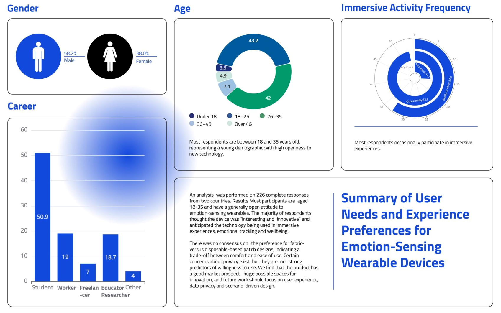

Understanding Stress and Wearable Acceptance
To better understand users' attitudes toward our project idea and their perspectives on potential applications of emotion-sensing smart wearables, we conducted a user survey across universities in Finland and China. The survey consisted of 13 questions designed to explore users' awareness, expectations, and acceptance of wearable devices capable of detecting breathing patterns and emotional states. The findings provide valuable insights into the relevance of developing a stress-monitoring prototype integrated with interactive experiences. They also help us better understand user needs and establish clear design requirements for our prototype.
The FlowUp project began with this user-centered research to investigate how students and university communities perceive stress-relief technologies and emotion-sensing wearables. The results informed the design and development of our wearable system, ensuring that it addresses real user needs while promoting accessible and engaging approaches to stress management.

Target Users
University students and researchers who experience academic pressure, workload demands, and daily stress.
Research Focus
The survey explored user awareness, expectations, privacy concerns, and preferred use cases for emotion-sensing wearable systems.
Design Direction
Findings supported the development of a soft, reusable, wearable system that provides clear feedback and fits naturally into daily life.